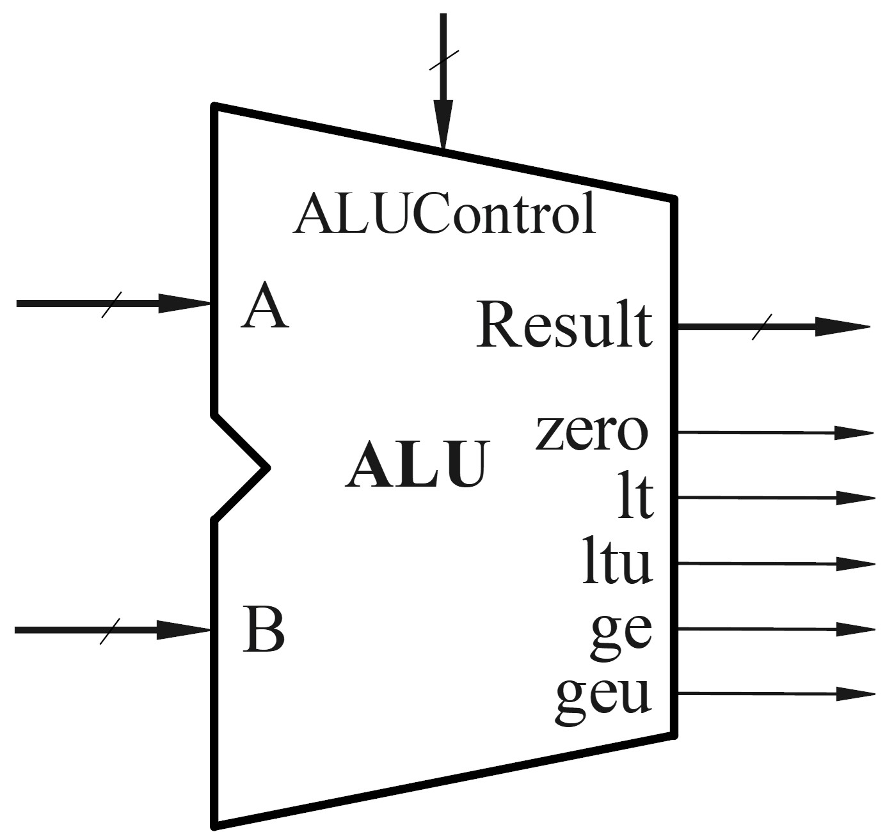
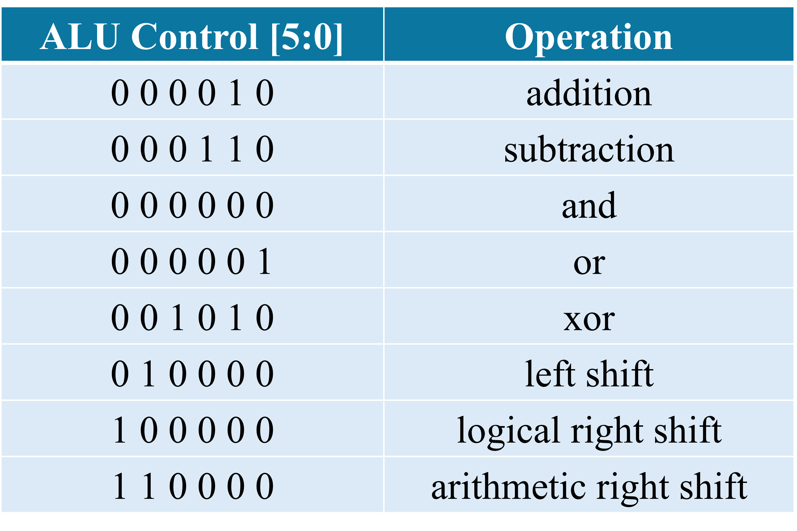
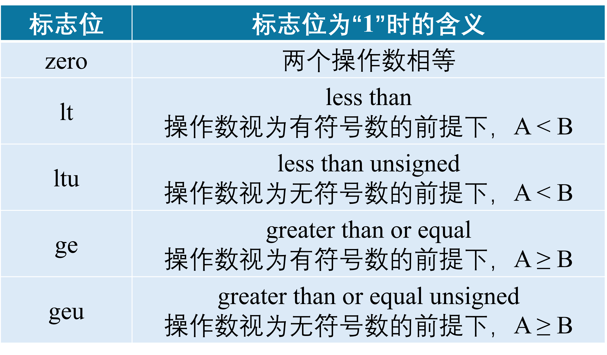
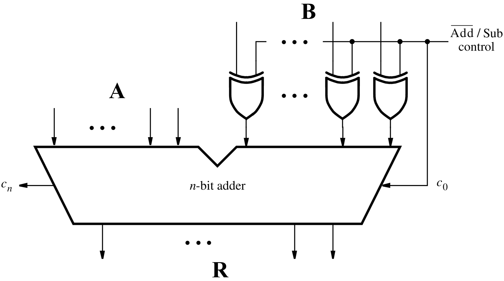

实验四 算术逻辑单元 ALU 设计
本实验中，我们将完成算术逻辑单元 (ALU) 的设计与仿真，为后续的处理器设计奠定基础。
1. ALU 功能描述
我们要设计一个算术逻辑单元 (ALU)，输入输出如图所示：


A 和 B 是两个 32 位的输入操作数，Result 是 32 位的运算结果。具体做什么运算由 6 位的 ALUControl 决定，如表格所示：


此外，ALU 还需要对比两个输入操作数的数值大小，并输出相应的标志位，具体如下表：


2. 实验内容
用减法实现大小值判断
加、减、与、或、异或、移位操作的 verilog 实现比较简单，这里着重讨论如何基于减法的结果完成两个操作数的大小值判断。
减法运算在硬件上是可以基于加法运算实现的，如图。我们可以根据减法的结果以及两个输入操作数的最高位，来判断数值大小。


必做内容1：证明判断数值大小的逻辑
已知输入操作数 A、B、减法运算的输出进位 cout，判断 A < B 的逻辑为：
对于无符号数，当
cout = 0时，A < B;对于有符号数，当
A[31] ^ B[31] ^ cout = 0时，A < B;
请证明以上逻辑是正确的。
必做内容2：Verilog 代码设计
根据功能描述完成 ALU verilog 代码的设计。注意 A >= B 的逻辑可以由 A < B 的逻辑取反推出。
ALU 代码框架1 module ALU( 2 input wire [31:0] input_A, 3 input wire [31:0] input_B, 4 input wire [5:0] ALUctrl, 5 output reg [31:0] result, 6 output wire zero, 7 output wire lt, 8 output wire ltu, 9 output wire ge, 10 output wire geu 11 ); 12 13 wire c_out; 14 15 // Your codes should start from here. 16 // ...... 17 // End of your codes. 18 19 endmodule
必做内容3：testbench 仿真
这里提供 testbench 文件：tb_ALU.v (点击下载) 。完成 ALU 模块的测试，并对 “所有 case 通过测试” 的界面进行截图。
1module light_top (
2 clk
3 ,reset
4 ,led_out
5 ,code
6 ,cs_o
7);
8
9 input clk, reset;
10 output led_out; // out for 24 LED
11 output code, cs_o;
12
13 wire clk, reset;
14 wire [23:0] led_out;
15 wire [7:0] code, cs_o;
16
17 wire [31:0] seg_out; // out for seg
18 wire [2:0] light_east_west_through, light_east_west_leftturn,
19 light_south_north_through, light_south_north_leftturn;
20 wire [7:0] count_east_west_through, count_east_west_leftturn,
21 count_south_north_through, count_south_north_leftturn;
22
23 trafficlight_fsm u_trafficlight_fsm(
24 .clk (clk)
25 ,.reset (reset)
26 ,.light_east_west_through (light_east_west_through)
27 ,.light_east_west_leftturn (light_east_west_leftturn)
28 ,.light_south_north_through (light_south_north_through)
29 ,.light_south_north_leftturn (light_south_north_leftturn)
30 ,.count_east_west_through (count_east_west_through)
31 ,.count_east_west_leftturn (count_east_west_leftturn)
32 ,.count_south_north_through (count_south_north_through)
33 ,.count_south_north_leftturn (count_south_north_leftturn)
34 );
35
36
37
38endmodule
3. 报告提交
本次实验需要提交：
实验报告：
下载实验报告模板
.v文件压缩包：包含设计文件和仿真文件
两项一同扫码提交（支持从微信聊天记录上传）。
Deadline ：2026-11-01 23:59:59 。